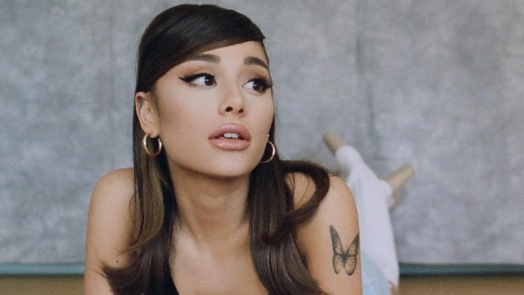

Ariana Grande: A história de uma estrela
Ariana Grande-Butera (Boca Raton, 26 de junho de 1993) é uma cantora, compositora, produtora musical, atriz e empresária norte-americana. Considerada um ícone pop e uma figura influente na música popular, ela é conhecida por seu alcance vocal de quatro oitavas e seu uso característico do registro de apito. Se tornou a cantora mais ouvida da história da música em streaming, somando mais de 90 bilhões de reproduções globais e um dos nomes de maior relevância da música pop e do entretenimento, em geral, da atualidade. Iniciou sua carreira como atriz na TV, em Victorious, um sitcom da Nickelodeon. Em dez anos de carreira solo, ela venceu dois Grammy Awards em um total de quinze indicações.
- Sua carreira musical começou com a trilha sonora da série Victorious. Desde então, Grande lançou seis álbuns, sendo o primeiro Yours Truly (2013), que alcançou o primeiro lugar na parada de álbuns americana, a Billboard 200. O feito também foi conquistado por mais quatro de seus álbuns, sendo eles My Everything (2014), sweetener (2018), Thank U, Next (2019), Positions (2020) e Eternal Sunshine (2024).
- Além de quebrar vários recordes em sua carreira, tornou-se a nova jurada do programa "The voice" do canal norte-americano NBC, na sua 21ª temporada, juntando-se assim a Kelly Clarkson, John Legend e Blake Shelton. Ariana também possui sua própria marca de maquiagem. Intitulada R.E.M Beauty, a marca de maquiagem da cantora é uma escolha carinhosa da música R.E.M do seu quarto álbum de estúdio, Sweetener. A marca é vegana, cruelty-free, paraben-free e reciclável. Segundo ela, "a marca foi desenvolvida para combinar ideias de outro mundo com inovação do mundo real". Em 2020, se tornou a primeira mulher a ultrapassar a marca de 200 milhões de seguidores no Instagram e a terceira pessoa mais seguida do mundo, tendo alcançado o posto de mulher mais seguida do mundo em 2021, e atualmente, com 378 milhões de seguidores no top 10 de pessoas mais seguidas do mundo, estando na 6ª posição
- Grande tem ascendência italiana, das regiões da Sicília e de Abruzzo. Seu nome foi inspirado pela Princesa Oriana de Felix the Cat: The Movie. A família dela mudou-se de Nova York para a Flórida quando sua mãe estava grávida dela, e seus pais se separaram quando ela tinha 8 ou 9 anos de idade. Frequentou a Escola Preparatória North Broward e participou de diversos teatros infantis e da comunidade.

Mais sobre a renomada cantora
Diferenças entre tags de bloco e tags em linha:
Tags de Bloco:
Definição: Tags de bloco criam blocos de conteúdo que ocupam toda a largura disponível e geralmente começam em uma nova linha. Elas são usadas para estruturar grandes seções de uma página.
Comportamento:
Quebra de Linha: Sempre iniciam em uma nova linha e empurram o conteúdo subsequente para baixo.
Largura: Ocupam toda a largura disponível do contêiner pai, a menos que seja especificado de outra forma com CSS.
Exemplos:
div: Um contêiner genérico que pode ser usado para agrupar outros elementos.
p: Define um parágrafo de texto.
h1, h2, h3, etc.: Definem cabeçalhos de diferentes níveis.
ul, ol: Definem listas não ordenadas e ordenadas, respectivamente.
header, footer, section, article: Elementos semânticos que ajudam a estruturar a página de forma mais significativa.
Uso: Ideal para criar a estrutura e layout de uma página, dividir o conteúdo em seções distintas.
Tags em Linha:
Definição: Tags de linha são usadas para marcar partes menores do conteúdo e não causam quebras de linha. Elas se ajustam ao tamanho do seu conteúdo e não forçam o início de uma nova linha.
Comportamento:
Quebra de Linha: Não iniciam uma nova linha. O conteúdo é exibido na mesma linha, a menos que o conteúdo não caiba e uma quebra automática ocorra.
Largura: Ocupam apenas o espaço necessário para o seu conteúdo e não expandem para a largura total do contêiner.
Exemplos:
span: Um contêiner genérico para estilizar partes do texto ou grupo de elementos.
a: Define um link.
strong, em: Definem texto em negrito e itálico, respectivamente.
img: Exibe uma imagem.
Uso: Ideal para estilizar ou formatar partes específicas do conteúdo dentro de blocos maiores sem alterar a estrutura do layout.